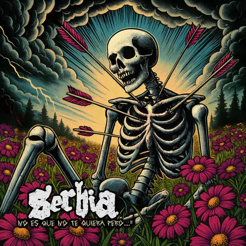

Lado B
Un espacio dedicado a descubrir música alternativa, explorar bandas y conocer las historias detrás de sus álbumes.
Explora las bandas
Conoce sus historias, su evolución musical y sus discos más representativos.

Meltt
Psicodelia, melodías envolventes y atmósferas que parecen sacadas de un sueño.
Explorar banda
Odisseo
Rock alternativo, sintetizadores y melodías cargadas de nostalgia e intensidad sentimental.
Explorar bandaDescubre mas
Un sonido nuevo puede llevarte a lugares inesperados
Meltt
Psicodelia, melodías envolventes y atmósferas que parecen sacadas de un sueño.
Explorar banda
Odisseo
Rock alternativo, sintetizadores y melodías cargadas de nostalgia e intensidad sentimental.
Explorar banda
Serbia
Rock alternativo de guitarras intensas, emociones a flor de piel y una energía directa.
Explorar banda ↗
Ases Falsos
Pop rock chileno con letras ingeniosas, melodías pegadizas y una mirada crítica.
Explorar banda ↗
Los Mesoneros
Rock alternativo y pop rock con guitarras melódicas, matices nostálgicos y energía.
Explorar banda ↗Álbumes destacados
Descubre álbumes que merecen una escucha y conoce qué hay detrás de ellos.
Pangea
Una experiencia de melodías envolventes, emociones intensas y una atmósfera que permanece.
Descubrir álbum
No es que no te quiera
Una mirada a los desencuentros sentimentales, las contradicciones y aquello que cuesta expresar.
Descubrir álbum